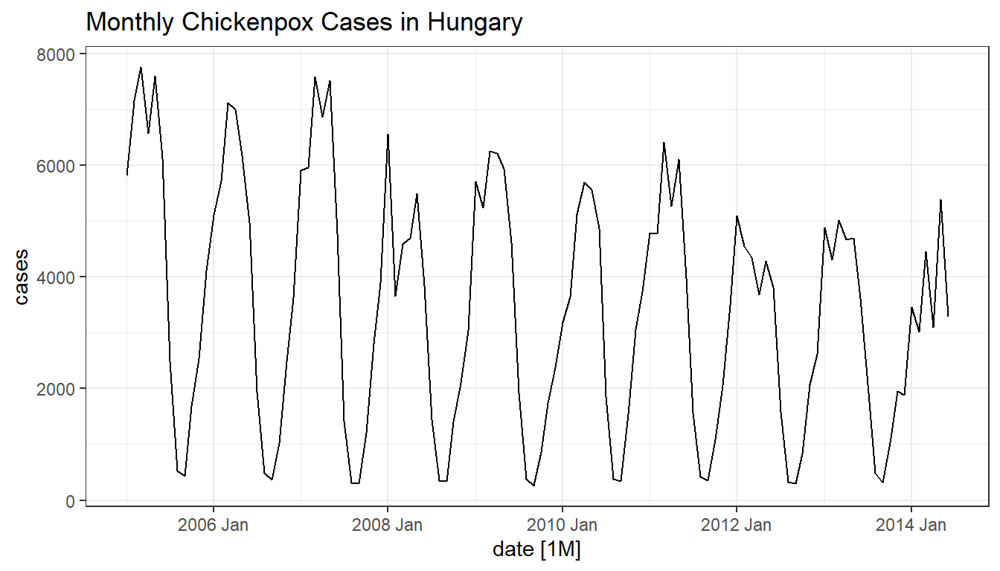
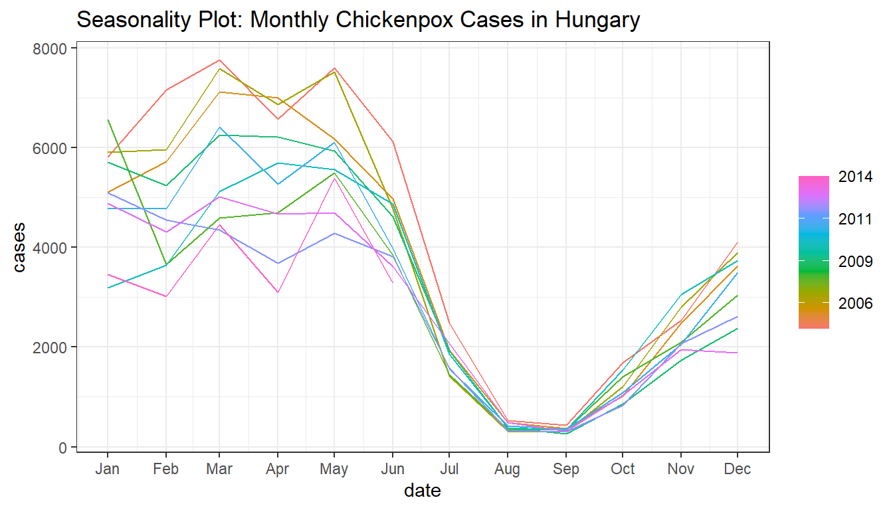
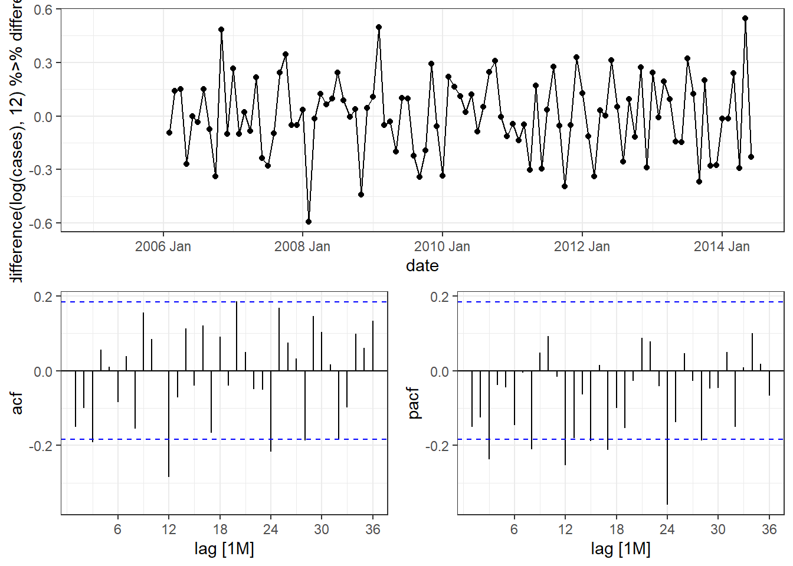
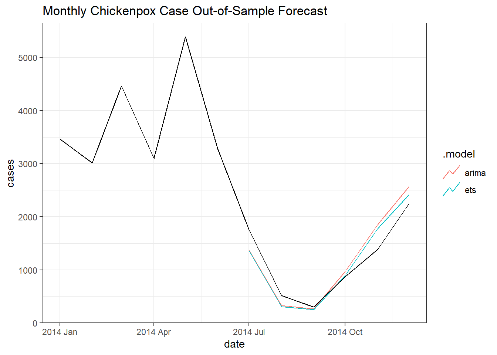

knitr::opts_chunk$set(
echo = TRUE,
message = FALSE,
warning = FALSE
)
library(tidyverse)
library(fredr)
library(fpp3)
theme_set(theme_bw())
if(basename(getwd()) != "Week 3") setwd(file.path(getwd(), "Discussions", "Week 3"))
url <- "https://archive.ics.uci.edu/static/public/580/hungarian+chickenpox+cases.zip"Week 3 Discussion
Setup
Preliminary Analysis
Get Chickenpox Data
https://archive.ics.uci.edu/dataset/580/hungarian+chickenpox+cases
if(!("hungary_chickenpox.csv" %in% list.files(getwd()))){
download.file(url, destfile = file.path(getwd(), "Data.zip"))
}
unzip("Data.zip")Data Preparation
The below code gave me issues. The original data are weekly cases. I first, as shown in the below code, was grouping by the year and month of the date column and summing the cases to get monthly cases. However, this was messing up the evaluation since weeks don’t neatly fit into months. So some month were getting abnormally large cases while the next was getting abnormally small case counts.
I changed the grouping methodology. Instead of simple taking the year and month from the date column, I first linearly interpolate the weekly case counts to daily case counts. While this is not exact and is sure to be incorrect, it provides a much closer approximation to the monthly amounts.
data <- read_csv("hungary_chickenpox.csv") %>%
rename_with(~str_to_lower(.x)) %>%
rowwise() %>%
mutate(
date = dmy(date),
# year = year(date),
# month = month(date),
cases = sum(c_across(!contains("date")))
) %>%
ungroup()# %>%
data <- data %>%
select(date, cases) %>%
complete(date = seq.Date(min(data$date), to = max(data$date), by = "1 day")) %>%
mutate(
cases.approx = zoo::na.approx(cases/7),
year = year(date),
month = month(date),
) %>%
group_by(year, month) %>%
summarize(cases = sum(cases.approx)) %>%
ungroup() %>%
mutate(
date = ymd(paste(year, month, 1)) %>% yearmonth()
) %>%
tsibble(index = date)I then split the data where the test set is the last 6 months and the training set is everything prior to that.
test <- data %>%
slice_max(order_by = date,n = 6) %>%
tsibble(index = date)
train <- data %>%
anti_join(y = test, by = "date") %>%
tsibble(index = date)Data Exploration
Time Plots
train %>%
autoplot(cases) +
ggtitle("Monthly Chickenpox Cases in Hungary")
Seasonality Plots
High volatility and more cases in Winter and Spring that begins in Fall.
train %>%
gg_season(cases) +
ggtitle("Seasonality Plot: Monthly Chickenpox Cases in Hungary")
The August and September values are a bit suspicious. It seems highly unlikely that roughly two values are used for each month. I would want to check the data source and see if they are doing anything to these numbers.
No longer applicable after modifying the data preparation.
Autocorrelation
A seasonal difference alone does not appear to make the data stationary. This can be seen in the time series plot and easily in the ACF
train %>%
gg_tsdisplay(difference(log(cases), 12) %>% difference(), plot_type = "partial", lag_max = 36)
Modeling
Estimation
A log scale will be used to help with the changing volatility. An additive ETS model and ARIMA will be fit.
(fit <- train %>%
model(
"ets" = ETS(log(cases) ~ error("A") + trend("A") + season("A")),
"arima" = ARIMA(log(cases))
))# A mable: 1 x 2
ets arima
<model> <model>
1 <ETS(A,A,A)> <ARIMA(1,0,0)(2,1,1)[12] w/ drift>The ARIMA model minimizes the AICc.
glance(fit)# A tibble: 2 × 11
.model sigma2 log_lik AIC AICc BIC MSE AMSE MAE ar_ro…¹ ma_ro…²
<chr> <dbl> <dbl> <dbl> <dbl> <dbl> <dbl> <dbl> <dbl> <list> <list>
1 ets 0.0256 -52.5 139. 145. 185. 0.0220 0.0323 0.116 <NULL> <NULL>
2 arima 0.0229 41.6 -71.2 -70.3 -55.4 NA NA NA <cpl> <cpl>
# … with abbreviated variable names ¹ar_roots, ²ma_rootsForecast
The models were trained on data prior to 2014-07-01. The forecast period is the interval 2014-07-01 UTC–2014-12-01 UTC.
fx <- fit %>%
forecast(test)
fx %>%
autoplot(
data %>% filter(year(date)>2013),
level = NULL
) +
ggtitle("Monthly Chickenpox Case Out-of-Sample Forecast")
Metrics
The ARIMA model does outperform the ETS model on the out-of-sample forecast with a lower RMSE by 230 cases. The bias does seem quite considerable, as evidenced by the Mean Error, which could indicate that more analysis should be performed before a final model is selected.
fx %>%
accuracy(test)# A tibble: 2 × 10
.model .type ME RMSE MAE MPE MAPE MASE RMSSE ACF1
<chr> <chr> <dbl> <dbl> <dbl> <dbl> <dbl> <dbl> <dbl> <dbl>
1 arima Test -45.0 291. 249. 2.06 21.8 NaN NaN 0.509
2 ets Test 12.2 250. 204. 6.67 19.3 NaN NaN 0.438